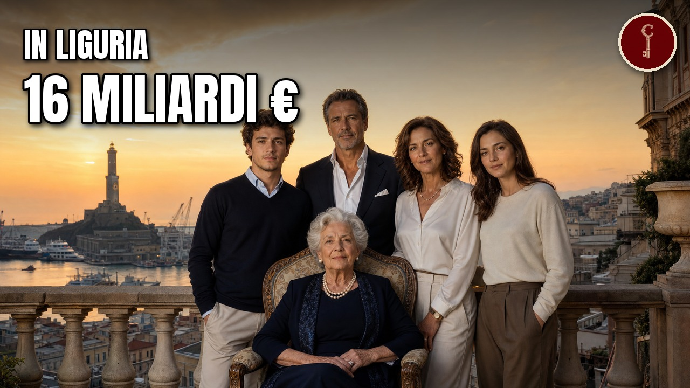

Liguria
Le 11 famiglie più RICCHE di Genova e della Liguria (le conosci tutte?)

Guarda il video su YouTubeLa spesa al supermercato sotto casa, la bolletta della luce, l'olio che arriva a casa con il furgone, il camion giallo in autostrada: in Liguria, dietro tante cose di tutti i giorni c'è una famiglia. In questo video mettiamo in fila le 11 famiglie con il quartier generale delle loro aziende a Genova e in Liguria, dall'undicesima alla prima, misurate sul fatturato dell'azienda di famiglia per la parte che è della famiglia (ultimo bilancio disponibile, sempre con l'anno).
Le fonti
Le fonti su cui si basa il video.
adria.sanlorenzoyacht.com
Sanlorenzo - Consiglio di amministrazionebebeez.it · 2025
BeBeez - Ingersoll Rand acquisisce TMIC e Adicompconfindustria.it
Antonio Gozzi - scheda del vicepresidente (Confindustria)duferco.com
Duferco - Group History (sito ufficiale)duferco.com · 2025
Duferco Group - home pageemarketstorage.it
ERG, comunicato stampa 12/03/2026, bilancio consolidato 2025emarketstorage.it · 2026
Orsero S.p.A. - Risultati FY 2025emarketstorage.it · 9 marzo 2026
Sanlorenzo, comunicato approvazione progetto di bilancio 2025emarketstorage.it · 20 maggio 2024
Sanlorenzo, comunicato varo 50Steel fuel cellemarketstorage.it · 13 febbraio 2026
Sanlorenzo, risultati preliminari 2025esmmagazine.com
Gruppo Sogegross Appoints Luca Gattiglia As General Manager - ESM Magazine 12/12/2025forbes.it
Forbes Italia - Giancarlo Devasini e' il piu' ricco d'Italia (12/03/2026), rilettura per la dataforzaitalianfootball.com · 2013
Sampdoria club focus: a decade of Riccardo Garronegrocerytradenews.com
Luca Gattiglia general managergruppo.bancobpm.it · 2022
Banco BPM - comunicato acquisizione Termomeccanica da parte di Leca Investgruppospinelli.com
The Spinelli Group companies (sito aziendale)hapag-lloyd.com · 2023
Closing Hapag-Lloyd / Spinelli - comunicato stampaifminvestors.com · 2022
San Quirico and IFM Investors agree to form a strategic long term partnershipilnordest.it · 2024
Il Nord Est e' centrale per Fratelli Cosulichilnordest.it · 2026
Navi, porti, camion e acciaio. Cosulich: I dividendi non ci servonoilsole24ore.com · 2024
Who is Aldo Spinelli, the entrepreneur former owner of Genoa and Livorno Calcioinformatorenavale.it · 2023
Galata Museo del Mare, Incontro in Blu con Costanza Mussoinformatorenavale.it · 2025
Più investimenti, fatturato e personale nella rotta 2028 di Grendiisrael.sanlorenzoyacht.com
Sanlorenzo - Shipyard (storia)liguria.bizjournal.it · 2022
Liguria Business Journal - Termomeccanica cede pompe a Trilliumlombardiabeniculturali.it
Lombardia Beni Culturali - Veduta aerea dello stabilimento della Termomeccanica italiana a La Speziamessinaline.it
storia completa (sito aziendale)milanofinanza.it
Il 51% Duferco alla cinese Hebei - MF Milano Finanza 23/09/2014milanofinanza.it
La Duferco di Gozzi accusa i minori volumi elettrici - MF 09/09/2026 (riletto con nuovi estratti)open.online · 2024
Bitcoin, la storia di Paolo Ardoino e Giancarlo Devasinipanorama.it · 2013
Morto Riccardo Garrone, imprenditorepiaggiogroup.com
Piaggio Group - Historysace.it · 2016
case history Fratelli Carlishippingitaly.it · 2025
4% per Laghezza SpA nel 2024shippingitaly.it · 2026
Acquisizioni a terra e nuove navi in mare nel prossimo futuro di Grendishippingitaly.it
Addio a Bruno Bolfo - Shipping Italy 18/07/2026shippingitaly.it · 2022
Bruno Musso e i suoi 84+60 annishippingitaly.it · 2026
Buono l'andamento dello shipping di Orsero nel 2025shippingitaly.it
Calo dei noli e fermo navi... (Shipping Italy, 28/07/2026) - estratti su flotta e terminalshippingitaly.it · 2026
Fatturato in calo ma profitto stabile a 20 milioni per Fratelli Cosulichshippingitaly.it
Gozzi (Duferco) si consola con un altro maxi utile della sua Nova Marina Carriers - Shipping Italy 20/03/2024shippingitaly.it · 2025
Grendi Trasporti Marittimi ha rilevato il 70% di Dario Periolishippingitaly.it · 2026
Il nuovo traghetto Horizon entrato in servizio nella flotta Grendishippingitaly.it · 2025
Laghezza nominato nuovo presidente di Confindustria La Speziashippingitaly.it · 2024
Laghezza raggiunge i 25mila mq di magazzini doganali nel retroporto di La Speziashippingitaly.it · 2026
Nonostante i limiti in porto a Genova l'utile di Spinelli sale a 25,3 milionishippingitaly.it · 2023
Shipping Italy - Scomparso Francesco Laghezzashippingtelegraph.com · 2023
Captain Antonio Cosulich's funeral took place in Genoatuttomercatoweb.com · 2025
L'Entella di patron Gozzi diventa maggiorenne: 18 anni di emozioni e impreseunige.it · 2026
Scheda aziendale SogegrossWikipedia
Agnesi (company) - Wikipedia ENWikipedia
Aldo Spinelli - Wikipedia (en)Wikipedia
Domingo Ghirardelli - Wikipedia ENWikipedia
Messina Line - Wikipedia (en)Wikipedia
Paolo Ardoino - Wikipedia ENWikipedia
SogegrossWikipedia
TotalErgMateriali
Attribuzioni di immagini e video
Carrello della spesa Basko
ItzANormalFioko · CC BY-SA 4.0

ItzANormalFioko · CC BY-SA 4.0
Fiat 1100 B "Musone" furgonata (ALR , BLR, ELR
Al*from*Lig · CC BY-SA 4.0
Al*from*Lig · CC BY-SA 4.0
Genova dal Castelletto
Luca Volpi (Goldmund100) · CC BY-SA 3.0

Luca Volpi (Goldmund100) · CC BY-SA 3.0
Panorama di Genova
Gabriel Rinaldi · CC BY-SA 4.0

Gabriel Rinaldi · CC BY-SA 4.0
Panorama di Genova e del suo porto verso levante
Laura malfatto · CC BY-SA 3.0

Laura malfatto · CC BY-SA 3.0
Genova-Porto antico-IMG 0299
Rinina25 · CC BY 2.5

Rinina25 · CC BY 2.5
Genova, il Porto e la Lanterna
Cos_Mon · CC BY-SA 3.0

Cos_Mon · CC BY-SA 3.0
Panorama di Genova e del suo porto verso ponente
Laura malfatto · CC BY-SA 3.0

Laura malfatto · CC BY-SA 3.0
Golfo dei Poeti al tramonto
Tuscanycalling · CC BY-SA 3.0
Tuscanycalling · CC BY-SA 3.0
La Spezia Harbor 1
Riottoso · CC BY-SA 4.0

Riottoso · CC BY-SA 4.0
Imperia Oneglia 2
Francesco Spaccamonte 2727 · CC BY-SA 4.0

Francesco Spaccamonte 2727 · CC BY-SA 4.0
Fratelli Carli mezzi storici - Imperia Italy
Al*from*Lig · CC BY-SA 4.0

Al*from*Lig · CC BY-SA 4.0
Jar in ceramic for olive oil
Lemone · CC BY-SA 4.0

Lemone · CC BY-SA 4.0
Olio Carli
Al*from*Lig · CC BY-SA 4.0

Al*from*Lig · CC BY-SA 4.0
Fratelli Carli stabilimento e museo (a destra)
Al*from*Lig · CC BY-SA 4.0
.jpg){kind=link}
Al*from*Lig · CC BY-SA 4.0
MLFREYJA
Jacopo Tofani · CC BY-SA 4.0

Jacopo Tofani · CC BY-SA 4.0
Porto di Carrara, Marina di Carrara
Basilicofresco · CC BY-SA 4.0

Basilicofresco · CC BY-SA 4.0
Olbia, porto (01)
Gianni Careddu · CC BY-SA 4.0
.jpg){kind=link}
Gianni Careddu · CC BY-SA 4.0
Porto canale cagliari
Abxbay · CC BY-SA 3.0

Abxbay · CC BY-SA 3.0
Sunset - Harbour of Genoa seen from Piazzale di San Francesco D'Assisi - Genoa 2014
José Luiz · CC BY-SA 3.0

José Luiz · CC BY-SA 3.0
Porto Genova Sampierdarena 01
Alessio Sbarbaro User_talk:Yoggysot · CC BY-SA 3.0

Alessio Sbarbaro User_talk:Yoggysot · CC BY-SA 3.0
Aldo Spinelli a Sanremo 2026 (headshot)
Ferdinando Traversa · CC BY-SA 4.0
.jpg){kind=link}
Ferdinando Traversa · CC BY-SA 4.0
Genova porto-Sampierdarena-IMG 2539
Twice25 & Rinina25 · CC BY 2.5

Twice25 & Rinina25 · CC BY 2.5
Genova porto-Sampierdarena-IMG 2540
Twice25 & Rinina25 · CC BY 2.5

Twice25 & Rinina25 · CC BY 2.5
Liverpool anfield road stadium
Arne Müseler · CC BY-SA 3.0 de

Arne Müseler · CC BY-SA 3.0 de
Nave Cargo Hapag-Lloyd in partenza dal porto di Genova - 15 06 2020
Sidvics · CC BY-SA 4.0

Sidvics · CC BY-SA 4.0
Matitone, Genova, notte
Sidvics · CC BY-SA 3.0

Sidvics · CC BY-SA 3.0
Genova - Panorama del Porto di Notte
Sidvics · CC BY-SA 3.0

Sidvics · CC BY-SA 3.0
Genova Ports at Night - Yellow
James Manners · CC BY-SA 2.0

James Manners · CC BY-SA 2.0
Ship IMO 7361180 - Jolly Arancione
Ale Sasso · CC BY-SA 3.0

Ale Sasso · CC BY-SA 3.0
Jolly Indaco, 28-09-2010, Genova
Eustace Bagge · CC BY-SA 3.0

Eustace Bagge · CC BY-SA 3.0
Porto Genova 0111
Twice25 & Rinina25 · CC BY 2.5

Twice25 & Rinina25 · CC BY 2.5
Porto Genova 0116
Twice25 & Rinina25 · CC BY 2.5

Twice25 & Rinina25 · CC BY 2.5
Riposto (Catania province)
PhotographerTranslator · CC BY-SA 4.0
.jpg){kind=link}
PhotographerTranslator · CC BY-SA 4.0
Messina Line Logo.jpg
CC BY-SA 4.0

CC BY-SA 4.0
Termovalorizzatore Silla 2 (Italy)
Korina T. · CC BY-SA 4.0
.JPG){kind=link}
Korina T. · CC BY-SA 4.0
Ingersoll Rand building, Phillipsburg, N. J. (8509250331)
Boston Public Library · CC BY 2.0
.jpg){kind=link}
Boston Public Library · CC BY 2.0
Golfo della Spezia (1976)
Hugh Llewelyn · CC BY-SA 2.0
.jpg){kind=link}
Hugh Llewelyn · CC BY-SA 2.0
Vaiano (PO) - stazione di servizio Erg
Massimilianogalardi · CC BY-SA 3.0
_-_stazione_di_servizio_Erg.jpg){kind=link}
Massimilianogalardi · CC BY-SA 3.0
Stazione di servizio TotaErg
F Ceragioli · CC BY-SA 3.0

F Ceragioli · CC BY-SA 3.0
Priolo Gargallo – Distretto industriale dalla Penisola Magnisi
Lucamato · CC BY-SA 4.0

Lucamato · CC BY-SA 4.0
Petrolchimico da Magnisi
Davide Mauro · CC BY-SA 4.0

Davide Mauro · CC BY-SA 4.0
Sampdoria‘s „Curva Sud“
Vincenzo.togni · CC BY-SA 4.0

Vincenzo.togni · CC BY-SA 4.0
Stadio Luigi Ferraris di Genova con il quartiere Marassi
Gabriel Rinaldi · CC BY-SA 4.0

Gabriel Rinaldi · CC BY-SA 4.0
Images basko.png
CC BY-SA 4.0

CC BY-SA 4.0
DOROLogoNew.png
CC BY-SA 4.0

CC BY-SA 4.0
Ekom gdo.png
CC BY-SA 4.0

CC BY-SA 4.0
Pescaglia, il Poggio, antica targa drogheria ed'altri generi
sailko · CC BY-SA 3.0

sailko · CC BY-SA 3.0
Sogegross.png
CC BY-SA 4.0

CC BY-SA 4.0
Titan II Sanlorenzo SL108HT in Antibes
Abxbay · CC BY-SA 4.0

Abxbay · CC BY-SA 4.0
Mouchka - Sanlorenzo in Venice
Abxbay · CC BY-SA 3.0

Abxbay · CC BY-SA 3.0
Sanlorenzo 72 Majola in Antibes
Abxbay · CC BY-SA 4.0

Abxbay · CC BY-SA 4.0
Sanlorenzo SL 108 Dandy 6 in Antibes
Abxbay · CC BY-SA 4.0

Abxbay · CC BY-SA 4.0
03 - Sanlorenzo range
Federico Carozzo · CC BY-SA 4.0

Federico Carozzo · CC BY-SA 4.0
05 - Sanlorenzo range
Federico Carozzo · CC BY-SA 4.0

Federico Carozzo · CC BY-SA 4.0
SSY
Federico Carozzo · CC BY-SA 4.0

Federico Carozzo · CC BY-SA 4.0
Seven Sins, Split (P1080925)
Matti Blume · CC BY-SA 4.0
.jpg){kind=link}
Matti Blume · CC BY-SA 4.0
460EXP vessel
Federico Carozzo · CC BY-SA 4.0

Federico Carozzo · CC BY-SA 4.0
Chiavari-panorama dal porto
vengomatto from Italia · CC BY-SA 2.0

vengomatto from Italia · CC BY-SA 2.0
Duferco (San Giovanni Valdarno) 01
Walter Giannetti · CC BY-SA 4.0
_01.jpg){kind=link}
Walter Giannetti · CC BY-SA 4.0
Acciaierie Cornigliano
Alessio Sbarbaro · CC BY-SA 2.5

Alessio Sbarbaro · CC BY-SA 2.5
Carsid Duferco (8343728240)
Mzximvs VdB from Brussels, belgium · CC BY-SA 2.0
.jpg){kind=link}
Mzximvs VdB from Brussels, belgium · CC BY-SA 2.0
Antonio gozzi (4)
Patron.Rafael · CC BY-SA 4.0
.jpg){kind=link}
Patron.Rafael · CC BY-SA 4.0
Palazzo dell'Università, Genova, esterno
Twice25 e Rinina25 · CC BY-SA 3.0

Twice25 e Rinina25 · CC BY-SA 3.0
Carsid Duferco (8343729500)
Mzximvs VdB from Brussels, belgium · CC BY-SA 2.0
.jpg){kind=link}
Mzximvs VdB from Brussels, belgium · CC BY-SA 2.0
Stazione di ricarica elettrica di Duferco Energia a San Donato Milanese
Marcuscalabresus · CC BY-SA 4.0

Marcuscalabresus · CC BY-SA 4.0
Genova (GE) Panorama Belvedere Castelletto 2016 (14)
EvelinaRibarova · CC BY-SA 4.0
_Panorama_Belvedere_Castelletto_2016_(14).jpg){kind=link}
EvelinaRibarova · CC BY-SA 4.0
European Investment Bank Group Headquarters in Kirchberg, Luxembourg
Caroline Martin · CC BY-SA 3.0 igo

Caroline Martin · CC BY-SA 3.0 igo
Gol Sansovini Bologna-Virtus Entella
Francesco Borrelli · CC BY-SA 3.0

Francesco Borrelli · CC BY-SA 3.0
Vado Ligure - porto, veduta (2)
Klaus Nahr · CC BY-SA 2.0
.jpg){kind=link}
Klaus Nahr · CC BY-SA 2.0
Magliolo-panorama
Davide Papalini · CC BY-SA 3.0

Davide Papalini · CC BY-SA 3.0
Milano - Vista panoramica verso i grattacieli di Porta Nuova
Antonio Mette · CC BY-SA 4.0

Antonio Mette · CC BY-SA 4.0
Albenga - torri (9393976629)
Peter Collins · CC BY-SA 2.0
.jpg){kind=link}
Peter Collins · CC BY-SA 2.0
Ex magazzino della Piaggio Aerei a Genova Sestri, febbraio 2009
Angelo G. Valle · CC BY-SA 4.0

Angelo G. Valle · CC BY-SA 4.0
1947 Vespa 98 100cc
Jay Cross · CC BY 2.0

Jay Cross · CC BY 2.0
Museo Piaggio Giovanni Alberto Agnelli entrance
Nilo1926 · CC BY-SA 4.0

Nilo1926 · CC BY-SA 4.0
Imperia ex stabilim. pasta Agnesi
Al*from*Lig · CC BY-SA 4.0

Al*from*Lig · CC BY-SA 4.0
Pontedassio-IMG 0772
Davide Papalini · CC BY-SA 3.0

Davide Papalini · CC BY-SA 3.0
Lungomare Vittorio Veneto (Rapallo) - panorama sul porto 2023-04-28
Parma1983 · CC BY-SA 4.0
_-_panorama_sul_porto_2023-04-28.jpg){kind=link}
Parma1983 · CC BY-SA 4.0
SF Ghirardelli sign
Saopaulo1 at en.wikipedia · CC BY-SA 3.0

Saopaulo1 at en.wikipedia · CC BY-SA 3.0
Paolo Ardoino by Gage Skidmore
Gage Skidmore · CC BY-SA 3.0

Gage Skidmore · CC BY-SA 3.0
Cisano sul Neva-IMG 0365
Davide Papalini · CC BY-SA 3.0

Davide Papalini · CC BY-SA 3.0
Palazzo dell'Università (Genoa) 14
Superchilum · CC BY-SA 4.0
_14.jpg){kind=link}
Superchilum · CC BY-SA 4.0
Scene ricostruite
Alcune scene sono ricostruite con l'intelligenza artificiale (38 immagini e 10 clip). Non sono documenti né fotografie d'epoca.
Mappe
- Confini amministrativi italiani (openpolis/geojson-italy, dati ISTAT) · CC BY 4.0 · fonte